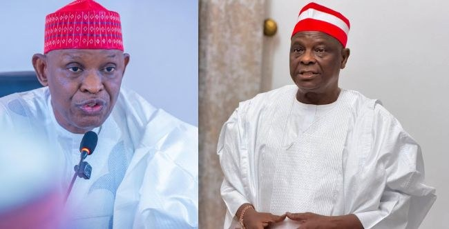

Kwankwaso Asked Me To Swear By Qur’an Over APC Deal With Tinubu, Abba Yusuf Alleges

Kano State Governor Abba Yusuf says his former political mentor, Senator Rabiu Kwankwaso, asked him to promise President Bola Tinubu that they would return to the All Progressives Congress (APC) if the legal challenge to Yusuf’s 2023 election victory proceeded without interference. Yusuf made the allegation in an interview with BBC Hausa presenter Aminu Kutama, discussing his January 2026 move from the New Nigeria People’s Party (NNPP) to the APC.
Yusuf said Kwankwaso sent him to meet Tinubu shortly after the election, which was being challenged by the APC candidate, Nasiru Yusuf Gawuna. He said the instruction was to convey their commitment to reunite with the APC if Yusuf prevailed, adding that Kwankwaso told him to swear by the Qur’an if necessary. Yusuf also said Kwankwaso held meetings with Tinubu and sent delegations to discuss the proposed arrangement.
According to Yusuf, lawmakers and local government chairmen took part in the discussions, which he said were conducted with Kwankwaso’s knowledge. He alleged that the understanding fell apart after Kwankwaso made public remarks opposing the deal, and that those comments were relayed to Tinubu. Yusuf rejected the suggestion that his defection betrayed his former mentor, saying he was carrying out an arrangement initiated by Kwankwaso. He added that they had not stopped communicating entirely and that he had recently sent Kwankwaso greetings.
Kwankwaso has previously denied reaching an agreement with Tinubu over the Supreme Court case, saying the court decided the election dispute on its merits. The Supreme Court upheld Yusuf’s victory in January 2024, overturning earlier judgments in favour of Gawuna. Yusuf formally joined the APC on January 26, 2026, ending his longstanding political association with Kwankwaso, who had played a major role in his emergence as governor. Yusuf’s account offers a different version of the political discussions surrounding the election challenge and the subsequent breakdown in relations.
Source: Channels TV